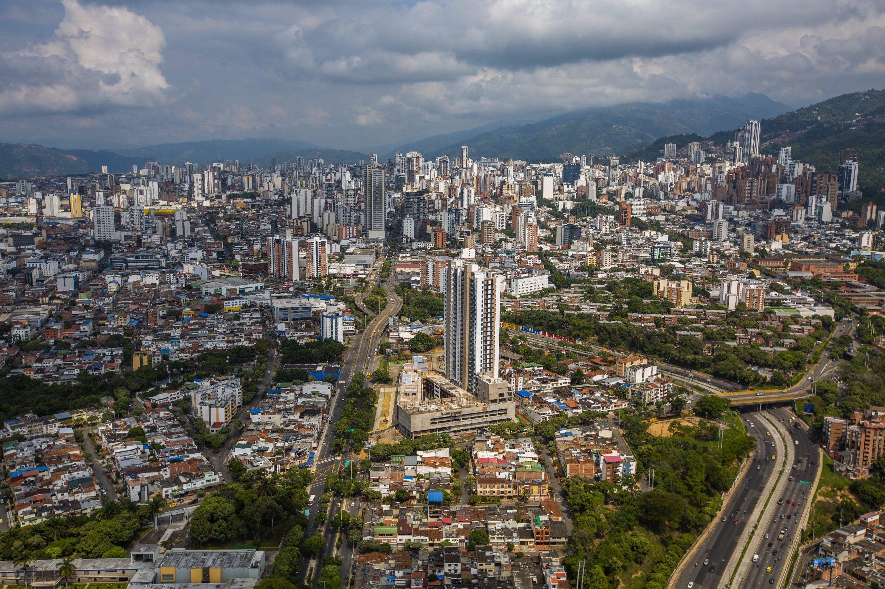

Bucaramanga ha implementado diversas estrategias para convertirse en una ciudad más sostenible. Proyectos ambientales enfocados en la protección de recursos naturales y el uso eficiente de energía han sido clave en este proceso.
Estas iniciativas buscan mejorar la calidad de vida de los ciudadanos y reducir el impacto ambiental, posicionando a la ciudad como un ejemplo de desarrollo responsable.
La educación ha sido un pilar fundamental en el crecimiento de Bucaramanga. Instituciones académicas están apostando por programas innovadores en tecnología y ciencias.
Esto ha permitido formar profesionales capacitados que contribuyen al desarrollo económico y tecnológico de la región, fortaleciendo el futuro de la ciudad.